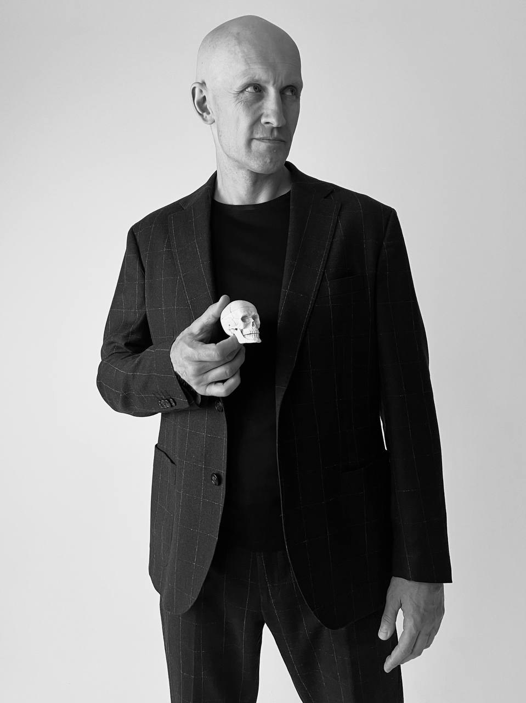
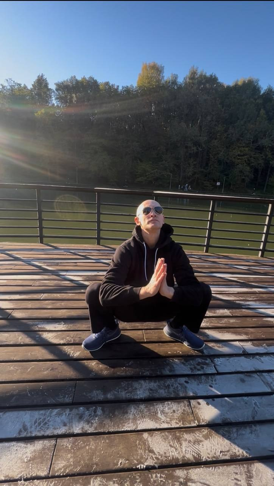
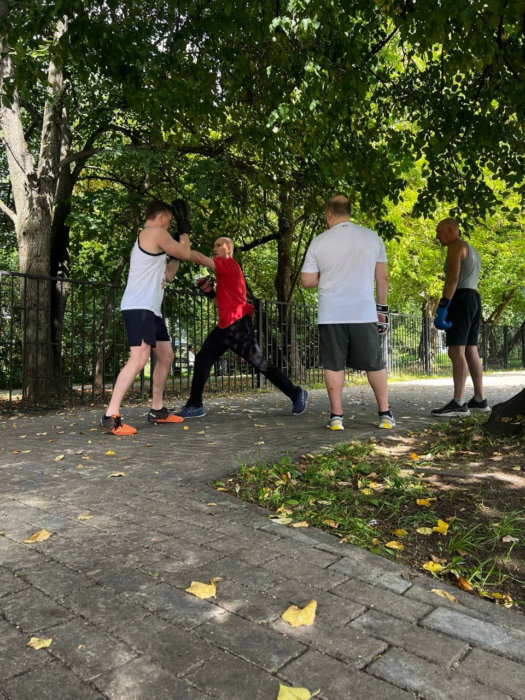
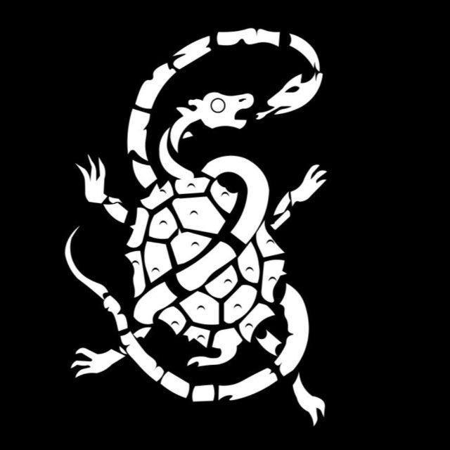

Постоянно
Находить место для движения в обычной жизни. Делать практику привычкой, к которой хочется возвращаться.
Физическая культура как часть жизни.
Практика, в которой важны осознанность,
последовательность и ваш собственный ритм.

В основе школы — исследование движения и внимание к ощущениям. Восточные практики здесь встречаются с языком анатомии и физической культуры.
Находить место для движения в обычной жизни. Делать практику привычкой, к которой хочется возвращаться.
Понимать, что и зачем вы делаете. Осваивать основы и связывать отдельные движения в целостную практику.
Уважать свой исходный уровень. Двигаться от простого к сложному без спешки и гонки за результатом.
Выберите, что вам ближе.
Расписание, места и условия участия
уточняйте в канале школы.

Работа с подвижностью, координацией и вниманием к телу. Упражнения и разбор принципов движения.
Узнать о занятиях ↗
Техника, взаимодействие с партнёром и работа над собой в сообществе единомышленников.
Посмотреть формат ↗Тематические встречи с теорией, практикой и подробным вниманием к исполнению техник.
Москва · Пятницкая, 43, стр. 3
Семинар завершён
Постоянно. Последовательно. Постепенно. С чего начинается подход школы к движению.
Читать в канале ↗Размышления Влада о движении, привычках и названиях тренировочных систем.
Читать в канале ↗
↗История символа и два образа, через которые автор объясняет работу с телом.
Читать в канале ↗Почему постепенность важна для регулярной утренней практики.
Читать в канале ↗Теория и практика, дыхание и внимание к телу. Архив события 7 ноября 2026 года.
Читать в канале ↗Заметка после семинара: о последовательности, терпении и ежедневном усилии.
Читать в канале ↗Редакционная подборка по экспорту канала от 10 ноября 2026 года. Новые публикации и актуальные анонсы — в Telegram.
Присоединяйтесь к каналу школы: знакомьтесь с подходом,
смотрите разборы и узнавайте о следующих занятиях.